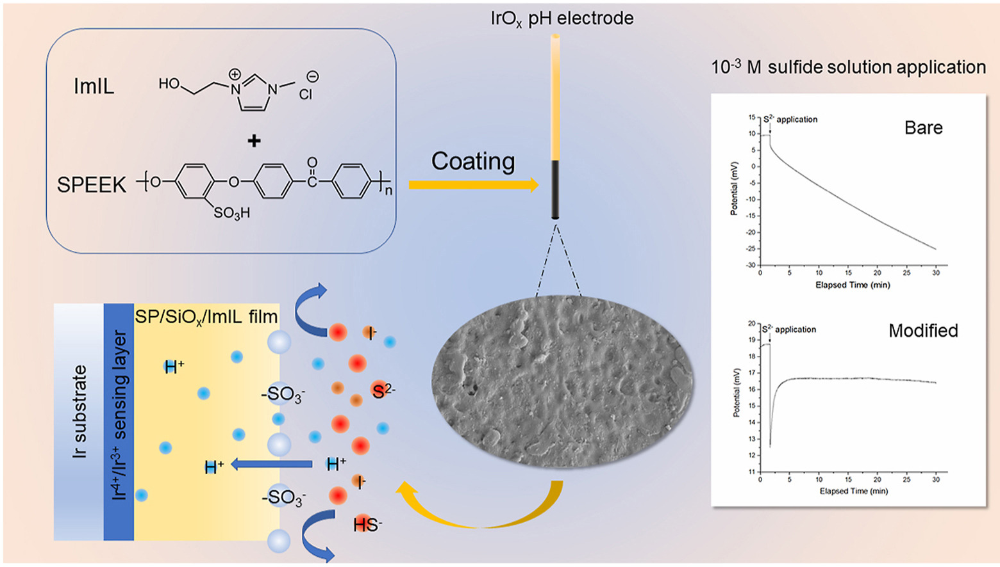
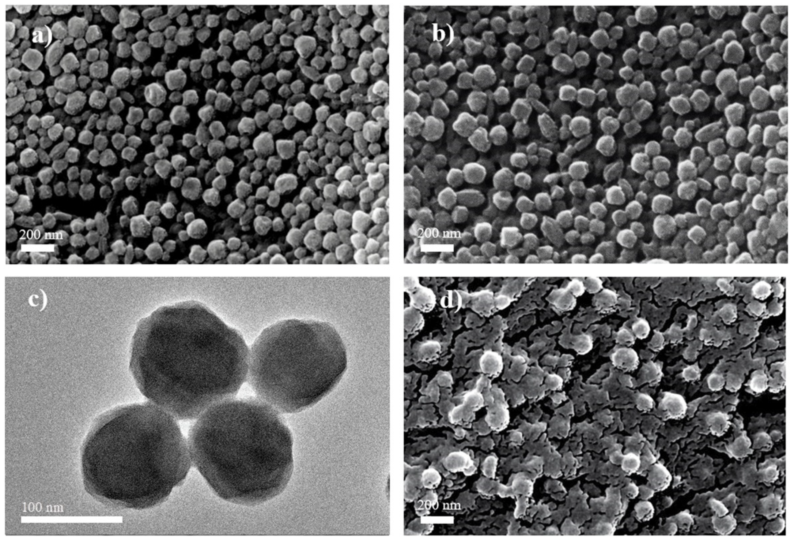

High anti-interference ability induced by the SP/SiOx/ImIL composite film on IrOx pH electrodes
Journal: Analytica Chimica Acta (2022; as coauthor)

High concentrations of redox substances in the solution may cause severe electrode potential drift, resulting in the inaccuracy of in situ measurements. Sulfide anion, a highly reductive substance, is the killer of all metal oxide electrodes because of its small size and strong surface activity. We first proposed to use SPEEK (SP) with silica-stabilized imidazole-type ionic liquid (ImIL) to fabricate a composite film (SP/SiOx/ImIL) to achieve a high anti-interference ability for metal electrodes. The composite film was especially designed to address the interference caused by sulfide anions and other small-sized anions (i.e., I−, F− and ascorbic acid). The reduced proton conductivity was restored by introducing ImIL into SPEEK matrix. Open circuit potential tests showed that the potential of the SP/SiOx/ImIL modified IrOx electrode fluctuated within 0.3 mV in 30 min continuous test at a concentration of 10−3 M Na2S, exhibiting good stability in moderately high sulfide solution. It also exhibited fast response and good reversibility. In addition, no potential drift was measured under other anions interferences. XPS survey verified that the Ir4+/Ir3+ ratio of the IrOx electrode did not change before and after application in sulfide-containing solution, indicating that the SP/SiOx/ImIL composite film has good anion isolation capacity.
A Long-Term Stable Sensor Based on Fe@PCN-224 for Rapid and Quantitative Detection of H2O2 in Fishery Products
Journal: Foods (2021; as coauthor)

Hydrogen peroxide (H2O2) has been reported to be used for the illegal treatment of fishery products in order to obtain “fake” freshness. Residues of H2O2 in food may be of toxicology concern. In this study, a nonenzymatic sensor was developed based on Fe@PCN-224 metal–organic frameworks wrapped by Nafion to detect H2O2 concentration. The hybrid structure of Fe@PCN-224 was fabricated by incorporated free FeIII ions into the center of PCN-224, which was ultra-stable due to the strong interactions between Zr6 and the carboxyl group. Scanning electron spectroscopy images exhibited that Nafion sheets crossed together on the surface of Fe@PCN-224 nanoparticles to form a hierarchical and coherent structure for efficient electron transfer. Electrochemical investigations showed that the Fe@PCN-224/Nafion/GCE possessed good linearity from 2 to 13,000 μM (including four orders of magnitude), low detection limits (0.7 μM), high stability in continuous monitoring (current remained nearly stable over 2300 s) and in long-term measurement (current decreased 3.4% for 30 days). The prepared nanohybrid modified electrode was effectively applied to H2O2 detection in three different fishery products. The results were comparable to those measured using photometrical methods. The developed electrochemical method has a great potential in detecting the illegal management of fishery products with H2O2.
Effects of Structures on the Sensing Properties of Long-Term Stable IrOx pH Electrodes
Journal: Journal of the Electrochemical Society (2020)

Iridium oxide electrodes made by melted Li2CO3 + Na2O2 in a semi-closed/closed reactor exhibited fast response and high stability. A slight periodic fluctuation of potential change with standard deviation < 0.65 mV in 48 h and < 2.30 mV (0.04 pH) over 139 h were observed. The composition, structure, and sensing mechanism of the pH sensitive substance was examined. The XRD pattern and XPS results suggested the newly produced material Hy-xLix[LiIr2]O6 was a mixture of H5-xLix[LiIr2]O6 and H3-xLix[LiIr2]O6 with a HCrO2 structure. Approximately 95% of Li+ was replaced by H+ after acid treatment. The pH sensing process was found to be an irreversible redox reaction between the tetravalent and trivalent iridium oxides according to the CV and XPS results. The presence of lithium ion in the lattice combined with well-crystallized small crystals corresponded to the fast response during the pH sensing process. The crystal structure may help to protect iridium from the interference of weak oxides, and thus may maintain stability with a relatively acceptable potential drift in the natural redox condition. The large portion of OH− existing in the oxide lattice detected by XPS confirmed the well-hydrated structure, which may also help the electrode to maintain high stability.
An improved method of preparing iridium oxide electrode based oncarbonate-melt oxidation mechanism
Journal: Sensors and Actuators B: Chemical (2018; as coauthor)

pH is a fundamental parameter in understanding the chemical processes in many fields. Based on the
strong oxidative characteristic of the molten lithium carbonate (Li2CO3), an advanced iridium oxide elec-
trode preparation approach is developed by adding sodium peroxide (Na2O2) powder into a Li2CO3 melt
in a semi-closed/closed reactor at a high temperature to increase the regional peroxide (O22− ) ion concen-
tration in the iridium-melt interface. The iridium oxide film (IROF) of prepared electrodes has a dense and
uniform surface with small and cone-shaped particles. Open-circuit tests show that electrodes exhibit
a near-Nernstian pH response with good linearity, fast response, high stability (a slight periodic fluctu-
ation of potential change with standard deviation < 0.65 mV in 48 h), good reversibility in the pH range
of 2.00–10.00, and anti-interference to low concentration of oxidants. Besides, electrodes show a stable
response in seawater, indicating the major ions in seawater do not influence their performances. In addi-
tion, prepared electrodes from the same batch show consistency in terms of sensitivity and the intercept
of the standard curve (E◦ ’), while electrodes from different batches vary in E◦ ’, which could be attributed
to the hardness in controlling identical synthetic conditions among fabrications of different batches.
-->